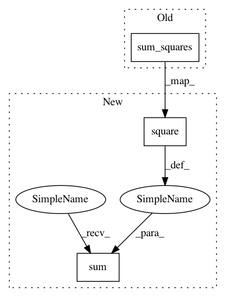

f9a4be45c3c4e4335d36c3ca934c399990021507,pypfopt/efficient_frontier.py,EfficientSemivariance,efficient_risk,#EfficientSemivariance#,555
Before Change
p = cp.Variable(self._T, nonneg=True)
n = cp.Variable(self._T, nonneg=True)
self._constraints.append(cp.sum_squares(n) <= (target_semideviation ** 2))
B = (self.historic_returns.values - self.benchmark) / np.sqrt(self._T)
self._constraints.append(B @ self._w - p + n == 0)
After Change
n = cp.Variable(self._T, nonneg=True)
self._constraints.append(
self.frequency * cp.sum(cp.square(n)) <= (target_semideviation ** 2)
)
B = (self.historic_returns.values - self.benchmark) / np.sqrt(self._T)
In pattern: SUPERPATTERN
Frequency: 3
Non-data size: 3
Instances
Project Name: robertmartin8/PyPortfolioOpt
Commit Name: f9a4be45c3c4e4335d36c3ca934c399990021507
Time: 2021-01-24
Author: martin.robertandrew@gmail.com
File Name: pypfopt/efficient_frontier.py
Class Name: EfficientSemivariance
Method Name: efficient_risk
Project Name: robertmartin8/PyPortfolioOpt
Commit Name: f9a4be45c3c4e4335d36c3ca934c399990021507
Time: 2021-01-24
Author: martin.robertandrew@gmail.com
File Name: pypfopt/efficient_frontier.py
Class Name: EfficientSemivariance
Method Name: max_quadratic_utility
Project Name: robertmartin8/PyPortfolioOpt
Commit Name: f9a4be45c3c4e4335d36c3ca934c399990021507
Time: 2021-01-24
Author: martin.robertandrew@gmail.com
File Name: pypfopt/efficient_frontier.py
Class Name: EfficientSemivariance
Method Name: min_semivariance